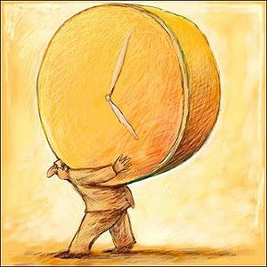
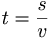

Tiempo
 De: La Frikipedia, la enciclopedia extremadamente seria.
De: La Frikipedia, la enciclopedia extremadamente seria.
 El tiempo pasando demasiado despacio

El tiempo pasando demasiado rápido
«¡Cómo vuela el tiempo!¡En ala delta!»
~ Yo sobre el tiempo
Es una cosa que se mete a presión en los relojes y que todo Dios estamos pendientes de que ande rápido o que ande despacio, pero por Diox, que no se quede quieto. En verdad el tiempo es un capullo hijoputa mala persona/bicho/cosa que anda más despacio cuando te aburres y más rápido cuando te diviertes. ¿Que que tiene que ver lo que ande este señor?, porque dependiendo de a la velocidad a la que ande, van las cosas más rápidas o más lentas.
Fórmula para calcular el tiempo
A algunos científicos les ha dado por hacer una fórmula para calcular el valor del tiempo (pobres ilusos):

Donde:
- t: significa tiempo
- s: significa sapo
- v: significa vaca
Es decir; un sapo parte en dos a una vaca para medir el valor del tiempo (nota mental, los científicos se meten mucha droga)
Medición del tiempo
Hay varios métodos para medir:
- Con regla:coges una regla de las de un metro y te pones a medir al tío que lleva el reloj en la primera imágen (para entendernos, es el tiempo).
- Pros:muy fácil y cómodo de usar, ¿quien no tiene una regla a mano?
- Contras:el tiempo se te puede cabrear, parar el tiempo (propiamente dicho) y ahostiarte hasta matarte.
- Cronometrando: coges un cronómetro, cuentas lo que le lleva al tiempo cargado con el reloj gigante recorrer un kilómetro y lo multiplicas por x2
- Pros:puedes hacer carreras: el tiempo contra una liebre, el tiempo contra una tortuga, el tiempo contra un caracol...
- Contras:que el tiempo vaya más rápido de lo calculado y se te rompa el cronómetro.
- Con una bolsa de pipas:cuentas las pipas que hay en la bolsa, las divides por dos y cronometras lo que tardas en comerlas.
- Pros:pasas el tiempo comiendo pipas.
- Contras: si se te acaban las pipas, se te jode el invento.
- Pidiendo la hora a un mendigo: lo más fácil, pides la hora a un mendigo, e igual también te hace la previsión meteorológica
- Pros:muy práctico y además haces amigos.
- Contras: que el mendigo no sea amistoso, saque una navaja y te mate.
Viajes en el tiempo
Pe... ¡Pero hombre! ¡¿Como vas a ir montado en el pobre señor tiempo?! ¡Ni que fuera un burro de Mijas! ¡Bastante tiene ya el pobre con tener que cargar con ese reloj gigante! (sí, es el tipo de la foto). Si lo que quieres es darte un paseo no jodas al tiempo, móntate en una máquina de movimiento perpetuo y jode a la termodinámica que me debe quince leros. ¡Qué eso no son máquinas del tiempo, son cabinas de bronceado! El tiempo no tiene máquinas... o tal vez sí ¿El tiempo se afeita? ¿Si me afeito con una maquina de afeitar del tiempo en lugar de cortarme la barba me crecerá?.
Gran inventor de la máquina del tiempo
Usos del tiempo
- Desperdiciarlo leyendo esto.
- Desperdiciarlo leyendo esto otro.
- Desperdiciarlo sin más.
- Perderlo.
- Matarlo.
- Dejarlo pasar.
- Aprovecharlo.
- Malgastarlo.
- Prestarlo.
- Pedirlo (en forma de hora).
Datos interesantes (el tiempo, ése gran desconocido)
- El tiempo en realidad se llama Manolo, tiene dos hijos, un perro y muchos relojes en casa.
- Si al tiempo le das viagra pasa muy rápido, para enganchar a la primera mujer que vea.
- Si al tiempo le pones un cepo en el pie pasa muy despacio.
- Si le pegas una hostia al tiempo, se para el tiempo y te tira el reloj gigante a la cabeza.
- La expresión "el tiempo pasa volando" se inventó cuando el tiempo ejercía de piloto de avionetas.
- La expresión "no tengo tiempo" se inventó un día en el que el tiempo sufrió un infarto y casi se muere.
- El tiempo se creó para joder a la gente.
- El tiempo no tiene un puñetero reloj de su casa en hora.
- El reloj de arena se creó un día en el que el tiempo se metió arena en los calzoncillos.
- El reloj de hagua se creó un día en el que el tiempo se bebió cincuenta litros de hagua y los meó con intereses (sí, lo que hay en el reloj de hagua no es hagua en realidad).
- El tiempo suele parar el tiempo (valga la redundancia) para violar a las chicas sin que estas puedan escaparse.
- Cuando el tiempo vió las fotos de la Elsa Pataky en la interviún se haceleró tanto que llegó al final de los tiempos justo al acabar de cascársela. Tuvo que hacer autoestop para retroceder tantos kilómetros...
- Los relojes contienen en su mecanismo interno un mililitro de lefa del tiempo.
- El tiempo es un capullo que se divierte haciendo que los eyaculadores precoces "eyaculen precozmente".
- El tiempo carga con el reloj gigante desde que apostó con unos amigos que podía cargar con él hasta el fin de los tiempos.
- El tiempo es el tío que nos esconde las llaves y nos hace gastar tiempo (valga la redundancia) para encontrarlas.
- El tiempo es hijo ilegítimo del Universo.
- Tú no eres el tiempo, y aunque lo mates no te convertirás en él.
- El tiempo es el elemento de Luxord
Errores en el Espacio y Tiempo
El tiempo no es perfecto (a diferencia de mi), razon por la cual, tiende a cometer errores en Beneficio o perjurio tullo. Los errores de tiempo-espacio a veces son provocados por personas de Volver al Futuro I y II (la tres no, porque ya viajan mucho más lejos en el antes), cuando se encuentran consigo mísmicas. Esta frikción llega muchas veces a provocar el fin del universo y el comienzo de la nunca hubo existencia del mismo.
Los Errores mas frecuentes son:
- Errores producidos por cambios o viajes en el tiempo (si, superman es uno d elos culpables de que multiples personas se sacaran la loteria, lo que genero una reaccion en cadena que el Dr. M. Bron describiria como una Paradoja (gracias a Chuck Norris que invirtio el giro de la tierra en sentido contrario al que lo hizo superman usando una de sus patadas voladoras para corregir el tiempo).
- Fallas de servidor, cuando el servidor del civer cafe se detiene, lo que tiene como efecto el detener los relojes de cada ordenador y darte horas y horas de internet (depende de lo fracasado del tipo del civer).
- Fallas por apertura de portales. como cuando en stargate universe, habren un portal que les tenia que llevar a otro planeta, pero en vez de eso los lleva a el futuro.
- errores por causa de examen, cuando haces un examen,el tiempo empieza a correr mas rapidamente que lo que tu procesador cerebral puede (que todo es mas rapido que eso), razon por la cual, no puedes hacer nada para contestar el examen. (el efecto inverso a este poder es ir sin estudiar al examen, el tiempo sera tan lento, al igual que incrementara tu desesperacion.
- ver algun episodio de Barnei mientras tienes los ojos sujetados por cinta ahdesiva y no puedes mover la cabesa.
Ver también
Autor(es):
- Nexo
- Frikiman
- Aque
- Epikurolibre
- Khazike Khashondo
- Frikih
- Rogalmar
- LunátikO
- Veni Vidi Vici
- Soynteco
Frikipedia 2005-2016, Licencia
GFDL 1.2 - Extraído por FrikiLeaks